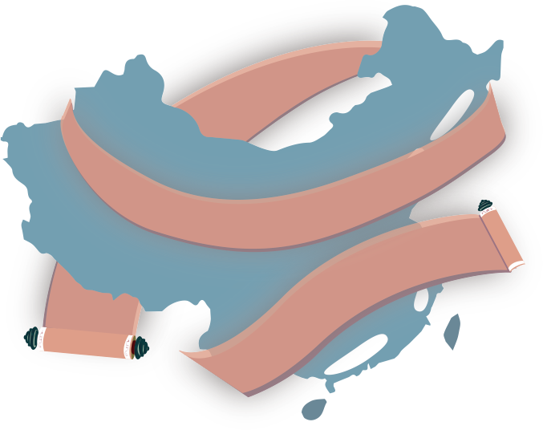
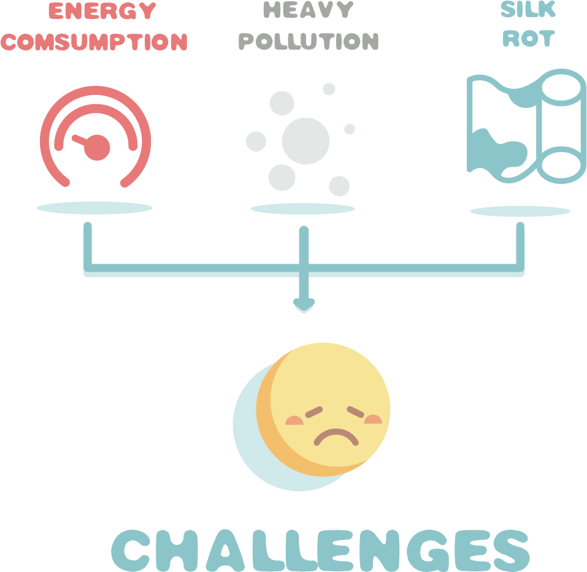
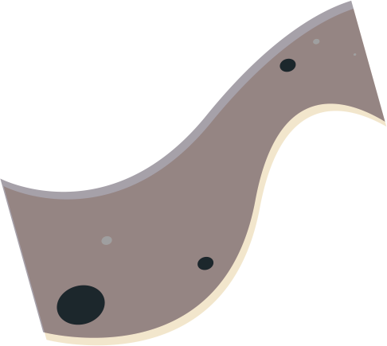
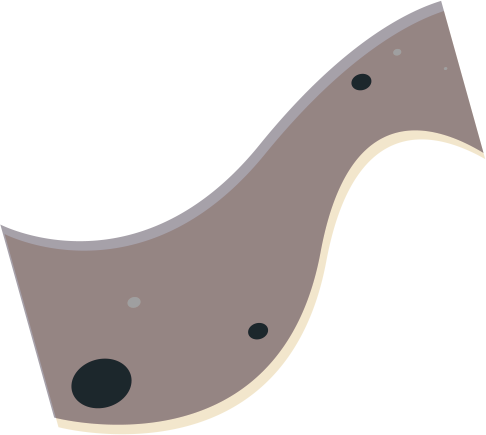
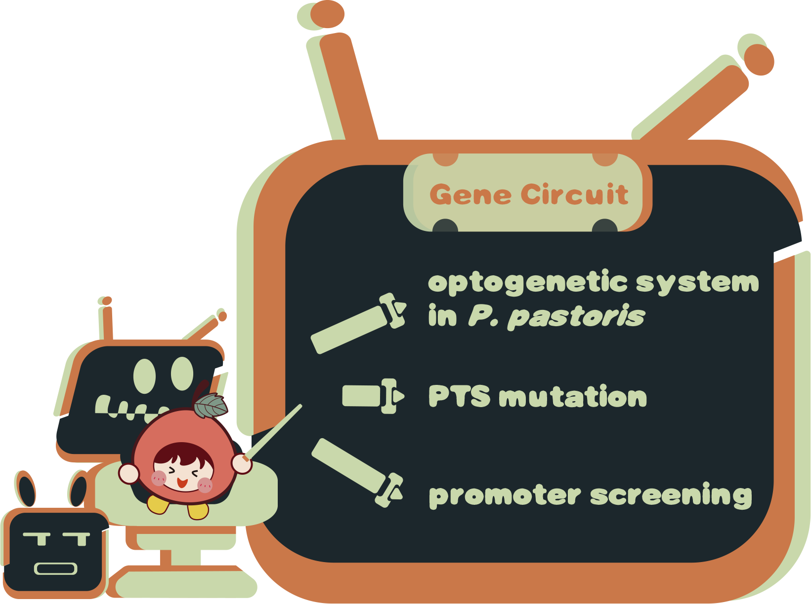
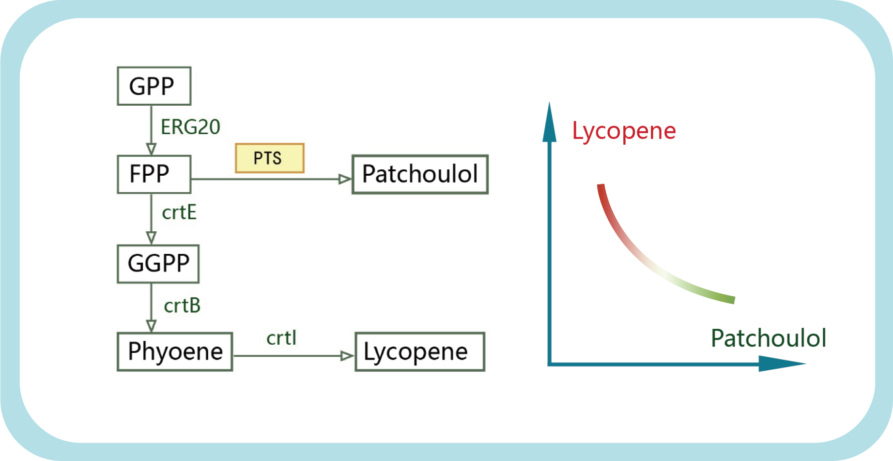
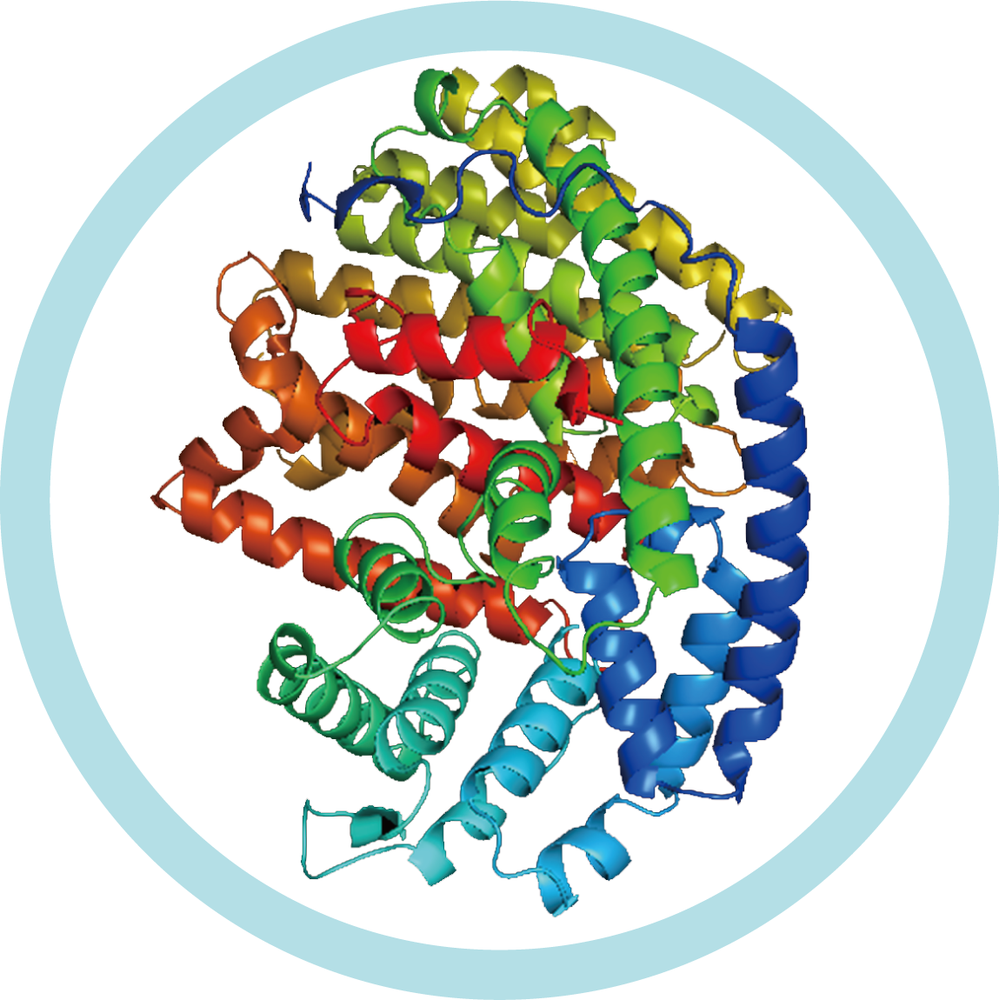

Silk, originated in China, is an important representative of Chinese handicrafts.
Since Ming and Qing Dynasty(1368-1912), silkworm farming, spinning and weaving industry in Guangdong Province have been highly commoditized and specialized.
The total Cocoon Output of Guangdong Province was 122.4k tons in 2019, and the real silk export of Guangdong Province in 2020 was $128 million, which makes silk industry a promising and flourishing business.
Moreover, China produces more than 900,000 tons of dyes, more than 70% of the world's in total.
0kt
0%
The industrial chain of textile dyeing industry is one of the longest and most complex in the manufacturing industry.
However, due to the the high energy comsumption, heavy pollution and the instability of dyes, the silk weaving industry is facing severe challenges.
According to Inventoty analysis of unconventional aire pollutants in textile industry, it emits the 8th largest amout of carbon dioxide in China due to the energy consumption.

Textile dyeing industry vocs (volatileorganic compounds) emissions accounted for about 8.8%.
As to the total emissions of industrial process vocs, it accounts for more than 30%.
What's worse,the silk, basically proteins, is easy to rot and thus lead to a quiker depreciation and a shorter shelf life.
 ····>

····>

 Patchoulol
Patchoulol
Patchoulol has unique woody aroma and lasting fragrance, which is also anti-insect and anti-bacterial. Patchoulolsynthase(PTS), catalyze the key steps of the reaction that produces Patchoulol.
Lycopene is a tetraterpene compound. Its strong coloring ability can also be used as a natural dye for lipstick and other products.
Lycopene
As a result, our team hopes to build a blue light-induced system, which is low energy consumption and environmental-friendly to dynamically produce special dyes: lycopene and patchoulol, giving silk color and antibacterial trait at the same time
Our team chose Pichia pastoris(P. pastoris) as our chassis, which has an endogenous methanol-induced expression regulation system.
Our work on the gene circuit is mainly focusing on designing optogenetic system in P. pastoris, PTS mutation and promoter screening.
As to the optogenetic system, through our effort, we were able to regulate the proportion of patchoulol and lycopene.
P. pastoris is a kind of commonly used yeast. However, the use of other promoters is rather limited, which is a barrier for building a library. Consequently, our team built a promoter library contains eight promoters.

In the part of PTS mutation, our main goal is to mutate the PTS gene sequence through ep-PCR, and conduct screening on the mutated PTS gene to obtain mutants with high expression of Patchoulol.
Through these ways, our team can solve the three problems above successfully!